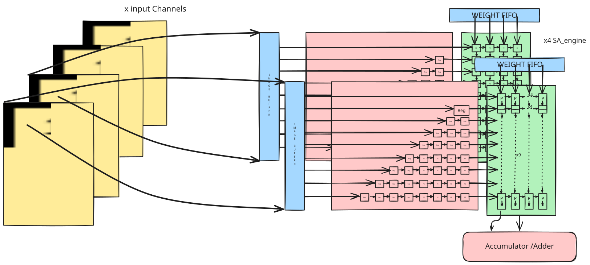
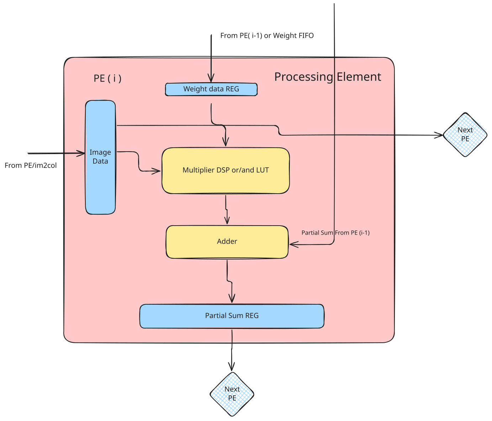

Systolic Array¶
This systolic array architecture consist of fifo and PE grid, to store and do convolution of weights and images respectively. It features stationary weights, i.e., weights are first loaded and gets stored into PE grid, and then the image is sent into PE grid in broadcasting manner(same image is sent to all PE blocks in a row at the same clock cycle).
{kind=link}

Explanation of how a systolic array engine (SA engine) operates:-¶
Loading weights into PE grid:¶
Weights are first read into the PE grid from the weight fifo array located in the fifo sharing controller. The SA engine’s current dimensions are 9x4, or 9 rows and 4 columns. Weights are simultaneously inserted into each PE block in a row. Thus, for a 9x4 grid, the first four weights that are read from the weight fifo array are loaded into the first row of the PE grid. The first set of four weights in the first row are pused downward and placed into the second row when the second set of weights is read from the weight fifo array. In the meantime, the second set of weights is stored into the topmost (first) row in the PE grid. This continues until all PE blocks are filled with weights.
Loading image into PE grid:¶
Afterwards, the image is read from DDR into the image fifo array, and the im2col module handles the write enable signal of the image fifo array. The image is then loaded into delay routers from this array. In the diagram below, delay registers are generated in the manner shown. Moving vertically downward in the PE grid results in the addition of one clock cycle delay to load partial sums from the preceding PE block into the subsequent one. In the first row, there’s no necessity for a delay, allowing the image to be transmitted directly into the PE blocks without requiring a delay register. Moving downwards to the subsequent row, the number of registers increases by one, thereby delaying the image by one clock cycle as it traverses downwards through the image FIFO array. And then from delay registers it goes into PE grid in broadcasting manner. Therefore, the image is sent through delay registers to ensure that the partial sum and image arrive at the same clock cycle into a PE block.
Convolution in PE grid:¶
Since the weights are pre-loaded into PE blocks, when an image is loaded into the one, it immediately accumulates the product of the weight and the image data with the partial sum coming from the PE block just above it. And transfers this partial sum to the PE block that is immediately below it. In the PE grid, this occurs simultaneously for every column. In this manner, the image and weights are computed inside the PE grid in parallel.
There exists three different variants of PE blocks inside the PE grid in this architecture of SA engine:
Top PE block:
This PE block, as its name implies, is situated on the top row of the PE grid.It takes weights and image as input, compute them, and gives partial sums and weights as output to PE blocks present in the next row below it.
- Middle PE block:
Except for the top and bottom rows, every row in the PE grid has this PE block. It computes the input weights, partial sum, and picture from its previous PE block in the row above, then sends the partial sums and weights to the following PE block in the row below.
- Bottom PE block:
This PE block only appears in the last row of the PE grid, as implied by its name.It receives partial sums, weights, and image, performs the multiplication and accumulation operation on them, and gives out partial sums. In contrast to all the other PE blocks, this one just sends out partial sums, weights are not given out because they are not needed further.
These variations are therefore introduced as a result of the different input and output ports of PE blocks of different rows.
Storing partial sums:¶
The last row’s output partial sums from the PE block come together at same clock cycle and are then stored in the partial sum fifo array. The partial sum output of every column in the PE grid is stored in each fifo in the partial sum fifo array. To read partial sums from the PE grid into the partial sum fifo array and to load images and weights from the fifo array into the PE grid, certain controllers are created.
A variety of SA engines and multipliers:¶
In the PE block, multiplication can be done in two ways: - Using DSP based multipliers: To access the muliplication operator, which makes use of DSP blocks, a design requires the * operator. This operator uses DSP blocks by default. - Using LUT based multipliers: Following attribute is applied to the multiplier output signal in order to generate adders and logic for the multiplication function rather than DSP .
(* syn_use_dsp = “no” *) signed [27:0] x;
Note: To utilise a LUT-based multiplier, set it to false, no, or 0. However, if DSP multipliers are needed, set its value to true, yes or 1.
Based on the various multipliers mentioned above, there are two distinct kinds of SA engines: - DSP SA engine: This SA engine makes use of DSP blocks in all of its multipliers. - LUT SA engine: This SA engine replaces LUTs and ADDs with DSP blocks in all of its multipliers.
Number of rows, columns in a SA engine is parameterized and can be changed by chnaging values of respective parameters. Also, the number of DSP and LUT SA engines to be used, is also parameterized and can be changed by changing values of their respective parameters. Following are the parameters used in design to achieve different configuration of SA block:
{kind=link}

Parameters of SA engine:¶
A SA engine’s number of rows and columns is parameterized, and its number can be changed by modifying the values of the associated parameters. It is also possible to modify the number of DSP and LUT SA engines to be implemented by adjusting the values of their corresponding parameters. The following design parameters are utilised to achieve various SA block configurations:
ROW: Total number of rows in one SA engine (default value is 9).
COL: Total number of columns in one SA engine (default value is 4).
NSA_DSP: Number of SA engines which uses only DSP multipliers.
NSA_LUT: Number of SA engines which strictly uses onyl Lut based multipliers.
N_SA: Indicated total number of engines,it is a localparam,and will be automatically computed based on NSA_DSP and NSA_LUT parameter values.
IMG_FIFO_DEPTH: Depth of all the fifo in image fifo array.
PSUM_FIFO_DEPTH: Depth of all the fifo in partial sum fifo array.
Below given is the diagram of one 9x4 systolic array engine architecture:
For fully connected (FC) layers, only one row of SA is used for computation. The outputs at each column are accumulated to previous value. This can be visualized as 1-D SA where the input moves horizontally and each column receives a weight. It can be noticed that, in FC layers a weight is only used once. Thus having 1-D (1-row x N-columns) SA is sufficient; as inputs are reused across weights, they are passed horizontally, while weights are not used more than once, they are passed vertically.
Upon finishing the computation of last convolution layer, the output of maxpool layer is the valid data that is to be used as input to FC layer. This data is stored in TDP RAM (via port B) such that first 8 channels data are stored in 8 TDP RAMs and next 8 channels data are stored in another subsequent 8 TDP RAMs and so on. This is repeated in round-robin fashion till all the layer ouputs gets stored.
After storing all the valid FC data inputs in TDP RAMs, each TDP RAM is read sequentially and fed to SA (operating in 1-D mode as discussed in above sections) whose outputs are accumulated at the end of each SA column of 8 engines. This accumulated results are further applied to a 256-bit register wherein, it provides 8 bytes in a cycle to the quantizer. These results are again stored back in TDP RAMs which are read when next FC layer begins. Finally, the last FC layer results are stored in DRAM as 32-byte bursts.